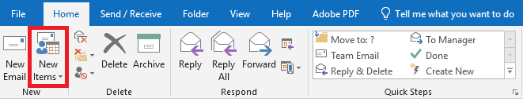

-
 1. How to send an encrypted email?
1. How to send an encrypted email?
Email Encryption has been enabled for all College of Nursing workforce members (@health.fau.edu email addresses). Encrypted email is designed to enhance our security measures and protect our information systems, confidential, sensitive and personal data. All CoN workforce members may send encrypted emails to any recipient regardless of the recipient address (inside or outside of FAU).
Who does this apply to?
Faculty/Staff who are involved with clinical, research, financial, educational or sensitive administrative activities that are protected by federal and private requirements (e.g., FERPA, HIPAA) should encrypt their emails when sending such information.
In general, you should encrypt any email communications regarding Protected Health Information (PHI) that contain:- A health status
- Provision of health care
- Payment for health care that can be linked to a specific individual
Likewise, any part of a patient's medical record or payment history must also be encrypted. Any message with sensitive content (such as an SSN, Driver's License, DEA #) that is going to an external address (e.g., hospitals or clinics) must be encrypted.
How does it work?
When creating a new email, simply insert "[safe]" in the subject line, without the quotes, as in the example below:

The recipient will receive an encrypted copy of that message and will be asked to sign in to unlock or decrypt the message to view its contents.
If you do not insert "[safe]" in the subject line, the email will not be encrypted and it will be treated as normal email.
Contact Jony Singh if you have any questions: jsingh@health.fau.edu -
2. How to open an encryted email (external users)
Below is step-by-step instructions on how to open an Encrypted or “Safe” email using a one-time passcode.
THE ONE-TIME PASSCODE EXPIRES IN 15 MINUTES AFTER IT HAS BEEN SENT!
- Open your email and click on “Read the message” option.

- A browser window [Google Chrome, Internet Explorer, or FireFox] will appear giving you two options.
- First option is to sign in with your account credentials
- Second option is to use the one-time passcode. Click the one-time passcode.

- After clicking on the one-time passcode option, another browser window will replace the previous window in step 2. This window will tell you that an email has been sent to your email address and will be asking for the one-time passcode.
- You will have received another email with your one-time passcode, therefore go back and check your email.
- In that email you should see a passcode that looks like this:
Above is only an example!
- Use the code you received and enter it into the new browser window from step 3. Specifically here:
- After you enter the one-time passcode you should be able to read the message within the email.
- Open your email and click on “Read the message” option.
-
3. How to paste a table in the Nursing database?
Please follow the step by step instructions below. If you still face diffiuclty, submit a ticket to jsingh@health.fau.edu
- In the course schedule tab when adding the syllabus, if you want to add a table it is better if you click on the paste from word button
 . The button is highlighted in the picture below.
. The button is highlighted in the picture below.
- After you click that button a window will pop up like so.
- Copy your table from Word and then press CTRL+V to paste the table. The table will appear in the window with all the formatting.
- Click the Insert button and the table will be added to the Syllabus in the Data Center.
- If after clicking Insert the table appears like below in which you have to scroll horizontally to see the table, please resize the table in Word to make it smaller in size before pasting it in the Data Center. If you have to scroll to see the table, when downloading the syllabus PDF the table will be cut off.

- In the course schedule tab when adding the syllabus, if you want to add a table it is better if you click on the paste from word button
-
4. How to change reply all to reply in Outlook?
Below is step-by-step instructions on how to change the Default “Reply all” setting to “Reply”. These instructions only apply if you login into Outlook online through a web browser.
- Login on to Outlook through Google Chrome using the website “outlook.fau.edu”.

- Enter your inbox folder after logging into to your Outlook.

- Select an email to view and click the drop down arrow next to “Reply all”.

- When the window appears click on “Change Default” and choose “Reply”.

- Login on to Outlook through Google Chrome using the website “outlook.fau.edu”.
-
5. How to enroll for HIPAA training?
As part of our commitment to HIPAA security and privacy at Florida Atlantic University, certain individuals are required to take HIPAA training covering the HIPAA Privacy Rule and HIPAA Security Standards. This training augments or replaces existing training in use by many departments on campus.
It is mandatory that all individuals identified as needing this training complete the courses within two (2) weeks from the date of this email. Your department will track completion and contact you for additional follow-up as necessary.
This course consists of two modules. The first module covering the HIPAA Security Rule is approximately 30 minutes long. The second module covering the HIPAA Privacy Rule is one hour long. Your supervisor is required to make time allowances to ensure that you are able to complete the course during your regular working hours. The courses may be completed using any web browser except Microsoft Edge. In addition, the course requires audio speakers or headphones in order to follow along.
To access the training courses, please follow these instructions:- Go to the FAU webpage.
- In the upper-right corner, select the icon with three vertical lines.
- Type “HIPAA Training” into the search bar and press enter.
- Click on the first link that displays within the search results.
- Read the information on the HIPAA Training page and follow the Skillsoft link posted at the bottom of the page.
- Log into Skillsoft with your FAUNet ID and password.
- Click on “My Training” in the top navigation bar.
- Click the “Launch” button next to the course you would like to complete. (The order in which you complete the courses does not matter; just make sure you complete both courses.)
- Complete both training courses and earn a passing score on the exams.
- Screenshot your scores for your own record.
NOTE: The HIPAA Privacy Rule module has TWO exams. Please make sure to save a copy of the completion results of BOTH exams.
If you have any questions regarding enrollment, please contact security-training@fau.edu
Please be aware of the following common issues:
- Web browser: There are some performance issues with the training modules when using Microsoft Edge. We recommend you use a different browser to complete these courses.
- Pop-up blocker: If you receive a message stating a pop-up has been blocked while you were launching the training modules, you may need to temporarily disable your pop-up blocker or make an exception for Skillsoft within your internet browser settings.
-
6. What is phishing?
Phishing is the attempt to obtain sensitive information such as usernames, passwords, and credit card details (and money), often for malicious reasons, by disguising as a trustworthy entity in an electronic communication.
Phishing Example
Phishing is typically carried out by email spoofing or instant messaging, and it often directs users to enter personal information at a fake website, the look and feel of which are identical to the legitimate one and the only difference is the URL of the website in concern. Below is an example that shows common red flags in an email which shows that it is phishing. -
7. How to upload and share a file on Filelocker?
- Make sure your FAU Net ID is active. If it is not active or needs to be activated, please follow the instructions given here : https://www.fau.edu/oit/files/how-to-activate-your-faunet-id.pdf
- Login to https://filelocker.fau.edu with your FAU Net ID and your password.
- Upload all of your documents as a PDF file to your File Locker
- Click the arrow to the right of the file you would like to send, then click “Share This File”.

- Search by name or FAU ID.

- Choose the name from the Search List, and then click "Share". (Note: If the name does not pop up, check mark the box 'Search the entire Florida Atlantic University directory' and search again)

-
8. How to upload and share a public file on Filelocker?
- Make sure your FAU Net ID is active. If it is not active or needs to be activated, please follow the instructions given here : https://www.fau.edu/oit/files/how-to-activate-your-faunet-id.pdf
- Login to https://filelocker.fau.edu with your FAU Net ID and your password.
- Upload all of your documents as a PDF file to your File Locker
- Click the arrow to the right of the file you would like to send, then click on the box “Public Share”.
- Please begin by typing the emails that you would like to share this file too. Then click the share button. (Note that there are other options that you can play around with to make the sharing process more secure)
- You may want to copy the link and share with even more people. This is just another option to share the file to other users.
- After you see the checkmark by public share proceed by pressing the share button at the bottom.
- Search by name or FAU ID.
- Choose the name from the Search List, and then click "Share". (Note: If the name does not pop up, check mark the box 'Search the entire Florida Atlantic University directory' and search again)
-
9. How to access FAU drives at home?
Below is step-by-step instructions on how to properly access FAU network drives from home. If you are getting the error message below or if your Nursing network drive has a red
X
on it like the image below, please follow these instructions.
Connecting to PulseSecure
- Click the
Connect
button to start the VPN connection to FAU
- After you press the
Connect
button, enter your FAUNet ID and Password then selectConnect.
- After you select
Connect
for the image above you will be prompted to input a Secondary Password. FAU VPN requires you to be enrolled in two-factor
Authentication (Duo.) When you are prompted for the secondary password, you will select any of the following options depending on how you initially
set up Duo on your account:
- Type push into the secondary password field and press enter to push an authentication request to your phone or tablet if you are using the
smartphone application. - Type sms into the secondary password field to have a code sent to you via text message. (You will enter the code once the dialog prompts you again.)
- Type phone into the secondary password field to receive a phone call to confirm the authentication request.

- Type push into the secondary password field and press enter to push an authentication request to your phone or tablet if you are using the
- If your system is in compliance for access, you will be connected to the FAU VPN and should see a green check mark next to your connection.
Connecting to Network Drives
- Once you have been connected to the FAU VPN connection above using PulseSecure click the
This PC
shortcut on your desktop.
- Once you have done this the Windows Explorer will open displaying the network locations you are able to access.

Disconnecting from PulseSecure Using Task Bar
- In your task bar right click the PulseSecure icon.
- Once you have right clicked the icon, hover your mouse over
FAU VPN
then left click 'Disconnect'

Disconnecting from PulseSecure Using the Application
Once the application is open left click the
Disconnect
button to disconnect.
- Click the
-
10. How to access email after migration to health email?
- You have received this email because you are scheduled to be transitioned into the new Office 365 platform. Your current FAU email will be migrated into the Microsoft Office 365 platform as a HIPAA compliance requirement. In addition to greater email storage space and HIPAA compliance, the transition to Office 365 service will provide you with many other benefits.
- Your new email address will end with “@health.fau.edu” instead of “@fau.edu.” People will still be able to reach you with the old email address; however, it is recommended that you start using “@health.fau.edu” in official correspondence.
- After the migration is completed, you will be able to check your email normally via Outlook or by visiting the website: http://outlook.fau.edu.
What is this new system?
What will change for me?
How will I check my FAU email on the web?
-
11. Office 365 iPhone/Android Email Configuration
- Launch Settings
- Click Mail, Contacts, Calendar

- Select Add Account

- Select Exchange

- Under Email put [ENTER YOUR FAUNetID HERE]@health.fau.edu
- a. Under Password enter your FAU Password which was set at myfau.fau.edu
- i. The initial default password is the three letters fau in lowercase followed by your date of birth in MMDDYY format (fauMMDDYY). Example, if your birth date is September 3rd, 1997, your initial password would be fau090397.
- b. Under Description enter,
FAU

- After settings have verified, select which items you would like to sync with FAU and click Save

Office 365 iPhone Email Configuration
- Select Apps on the home screen
- From the Apps list, select Settings
- Scroll down to the category Accounts and select Add account.
- Under the list of account types you can add, select Microsoft Exchange ActiveSync
- At the Add an Exchange ActiveSync account page
- a. Enter in your FAU email address (eg. FAUNetID@health.fau.edu) in the Email address field
- b. Enter your FAU password in the password field
- i. The initial default password is the three letters fau in lowercase followed by your date of birth in MMDDYY format (fauMMDDYY). Example, if your birth date is September 3rd, 1997, your initial password would be fau090397.
- c. Click Next
- In some cases it will not auto detect the server settings
- a. At the Setup could not finish message click Edit details
- b. Ensure your FAU email address is entered (eg. FAUNetID@health.fau.edu ) in the Email address field
- c. Under Domain\username enter in your FAU email address (eg. FAUNetID@health.fau.edu )
- d. Under Exchange server enter outlook.office365.com
- e. Select Next
- Under Activation click OK
- Under Remote security administration click OK
- At the Account options page click Next at the bottom of the page
- When prompted to Activate device administrator? Click Activate on the bottom
- Under Set up account click Next
- If prompted for Security update required, click OK
Office 365 Android Email Configuration
- Other Android
- Email Server: outlook.office365.com
- Email Address: FAUNetID@health.fau.edu
- Domain \ User: FAUNetID@health.fau.edu
- Password: FAU Password
- i. The initial default password is the three letters fau in lowercase followed by your date of birth in MMDDYY format (fauMMDDYY). Example, if your birth date is September 3rd, 1997, your initial password would be fau090397.
-
12. Setting Up Microsoft Outlook with Office 365 email for Windows
- Open Outlook - when opening for the first time while on the network, Outlook will automatically begin to
attempt to setup

- Accept the defaults on the pop-up screen, select next, and next again

- On the "Auto account setup" screen, your username should automatically populate

- If your username (FAUnetid) is not filled in, enter your complete username and password (ie. FAUnetid@fau.edu)

- Fill in your full name if not automatically populated.
- Select
Finish
.

- Outlook setup is complete. Your email should start to come into your Outlook inbox.
If you are logged into a computer on FAU's network (domain), use the following instructions:
- Ensure you have an active internet connection.
- Open Outlook
- On the
Auto account setup
screen, enter your full email address (ie. FAUnetid@fau.edu), password and name.

- Click -> Next
- A screen will popup
Windows Security
- Enter your password when prompted.
- Click -> OK
- Outlook will configure.
- Click -> Finish.
- Enter your password when prompted.
- Ensure the box is checked for
Remember my credentials
- Outlook setup is complete. Your email should start to come into your Outlook inbox.
If you are not logged into FAU's network (domain), use the following:
- Open Outlook - when opening for the first time while on the network, Outlook will automatically begin to
-
13. How to access Skype for Business?
- Find the Skype for Business desktop app and open it.

- Once the program is open, input your FAU email address into the Sign-in address field then press
Sign in

- You will be logged in after inputting your credientials. To add an out of network user, click the "Add a contact" button under the search bar.

- Once the dropdown menu opens, hover over
Add a Contact Not in My Organization
then click on Skype.
- Type the name or email of the out of network user into the search bar.

- Once the user's skype appears, right click their profile then hover your mouse over
Add to Contacts List
then left clickOther Contatcs.

- Once you press
Other Contacts
a request will be sent to the out of network user. Once they accept that chat request you will be able to conatct the user.
- Find the Skype for Business desktop app and open it.
- Once the program is open, input your FAU email address into the Sign-in address field then press
Sign in.
- Once you are logged into the Skype for Business application, open outlook. In outlook left click
New Items.
 - After you left click
New Items,
a dropdown menu will open. In this menu left clickMeeting.

- After selecting this option a new window will open. In this window input the email address of the out of network user you want to skype with.
Select a meeting time and add a subject (optional).
- After adding the details select
Skype Meeting
in the top bar.
- Once you click
Skype Meeting,
a link will be automatically generated. You can join the meeting now or wait to obtain a notificaiton from outlook later.
Send the email so the out of network user can also be provided with a link to the meeting.
- When you click
Join Skype Meeting
skype for business will open from your windows tray. SelectUse Skype for Business
then press OK.
Below is a step-by-step walk through on how to utilize Skype for Business
Using Skype for Business for contacting out of network users
Using Skype for Business through outlook for contacting out of network users
- Find the Skype for Business desktop app and open it.
-
14. How to remove blank bar from multi-display?
- Open the start menu and click Settings

- Click on System

- Click on the Display tab

- Navigate to the heading Multiple displays, scroll down the page to see the heading if it is not visible. Under the Multiple displays heading, click Extend these displays to select a new multi-display option, then click Show only on 1

- A notification banner will appear, click on Keep changes to confirm the settings change.

- Click on Show only on 1 under the Multiple Displays heading, then click on Extend these displays

- A notification banner will appear, click on Keep changes to confirm the settings change.

Note: please note that open application windows on the secondary display will need to be moved back.
- Open the start menu and click Settings
-
15. How to add a new device on DUO mobile?
Please watch the video below:
-
16. How to add a departmental account in Outlook?
How to add a departmental account in Outlook (Desktop App)
How to add a departmental account in Outlook (Browser)
-
17. How to allow pulse secure to be updated?
Please watch the following video:
-
18. How to use REDcap's e-Consent Framework and
send an Email Confirmation with a copy of it
- After creating your consent form in REDCap, please follow the below steps.
- In your REDCap Project, be sure to have enabled the project to have surveys.
- Go to the Online Designer and enable the project as a survey.
- After enabling surveys in the project, scroll down to the PDF Auto-Archiver section and enabled
Auto-Archiver + e-Consent Framework
. -
e-Consent Framework Options:
- e-Consent Version - Allows participants to keep track of which version of consent form. The number must be updated manually.
- First Name Field - Select the variable where the participant's first name is recorded.
- Last Name Field - Select the variable where the participant's last name is recorded.
- e-Consent Type - Allow you to categorize the type of consent form. [Optional]
- Date of Birth Field - Select the variable where the participant's date of birth is recorded. [Optional]
- To allow the participants to receive a copy of their consent form, ensure that
Send confirmation email (optional)?
is enabled andInclude PDF of completed survey as attachment
is checked.
- With this enabled, at the end of the survey there will be an option for the participant to input their email to get an email copy of the consent form.
- After enabling those settings, be sure to click on
Save Changes
at the bottom
- After creating your consent form in REDCap, please follow the below steps.
-
19. How to reset password in eCW
Please watch the following video: